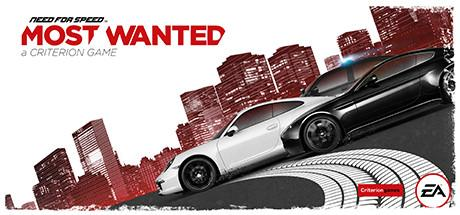

Need for Speed™ Most Wanted
Género: Acción/Aventura/Carreras
Plataforma: PC
La acción en el mundo abierto de Need for Speed™ Most Wanted te da la libertad de conducir a tu manera. Salta, coge atajos, cambia de coche, pasa desapercibido o ve a las zonas que mejor se adapten a los puntos fuertes de tu vehículo. Ábrete paso entre los policías y rivales con tus habilidades, la tecnología punta de tu coche y un montón de nitro. Todo depende de ti, de tus amigos y amigas, y de una selección de coches sin igual. Veamos de qué eres capaz.